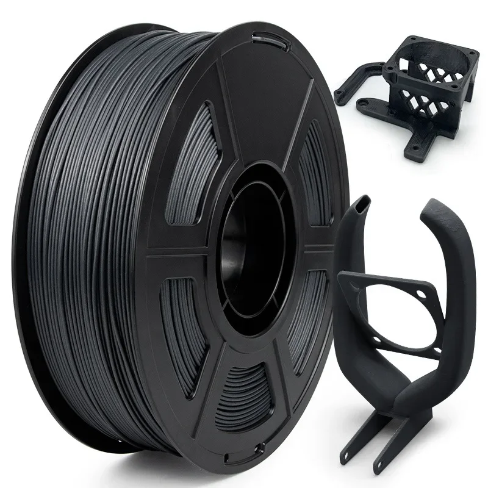
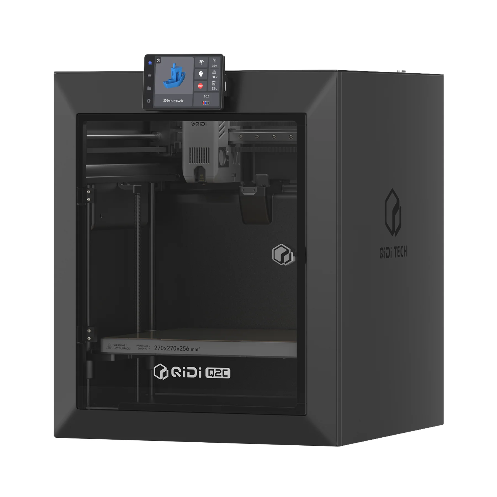
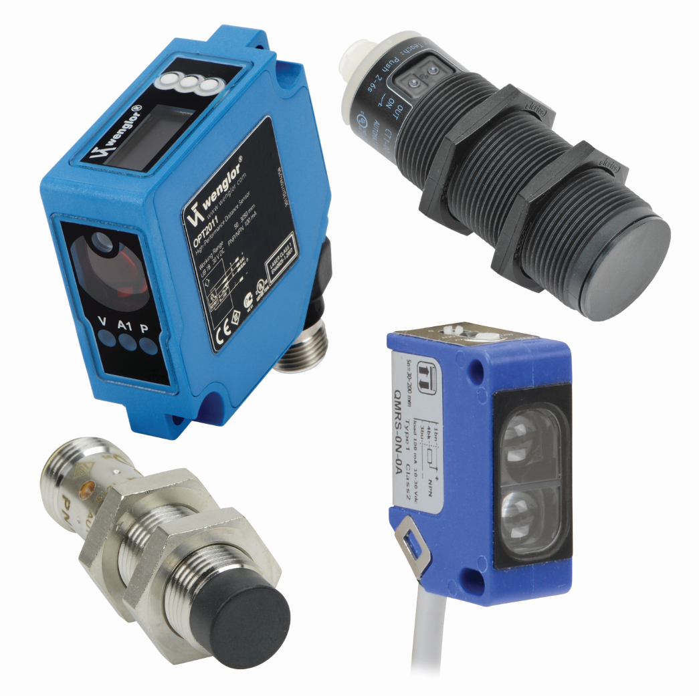

At Polymer Prodigy Labs LLC, we bridge advanced computer-aided manufacturing with local production integrity. Traditional manufacturing locks facilities into rigid, overpriced supply chains for proprietary metal components. By utilizing modern slicing computation, precise thermal calculations, and localized 3D printing pipelines, we bypass these bottlenecks entirely.
Our unified software ecosystem maps directly to open-source composite printing networks. This allows client facilities to instantly transform secure digital data libraries into high-strength, deployment-ready operational hardware directly on the plant floor.
To aggressively cut machinery capital expenditure, we rely on advanced Carbon Fiber Reinforced Nylon (Nylon-CF) composite synthesis. We implement a structural polymer matrix infused with chopped carbon fiber strands to challenge legacy metal alloys.


We validate and field-test all modular hardware components using the following verified open-source thermal architecture parameters:
Custom industrial automation traditionally demands astronomical upfront capital, often scaling into hundreds of thousands of dollars for specialized machined metal assemblies. Polymer Prodigy Labs breaks this financial paradigm. We decouple core kinetic power from proprietary machinery fabrication.
By blending industry-standard, off-the-shelf electronic and pneumatic systems with custom, high-strength Nylon-CF structural geometry, we deliver highly optimized automated machinery at a fraction of legacy capital expenditure.
Sensors, driving motors, and system circuitry are practically the only infrastructure components that cannot be printed. By isolating these standard components, the entire surrounding machinery can be created, not cut, stamped, or cast, but extruded, layer-by-layer into fully functional parts.
We leverage proven, heavy-duty industrial pneumatics and electric motors for raw force delivery, while routing, housing, and isolating that force within composite structures optimized for the plant floor.
